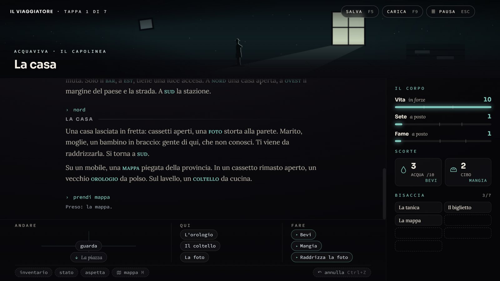
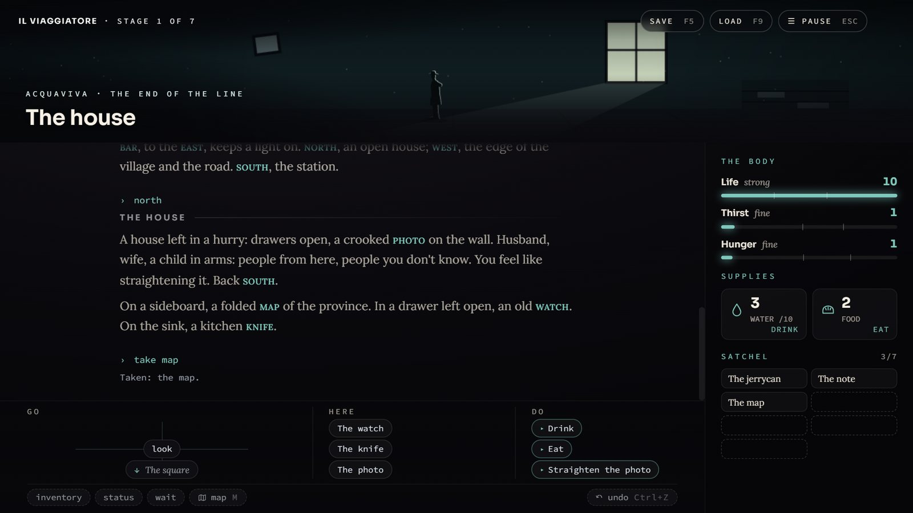
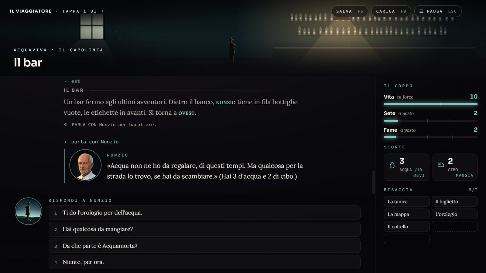
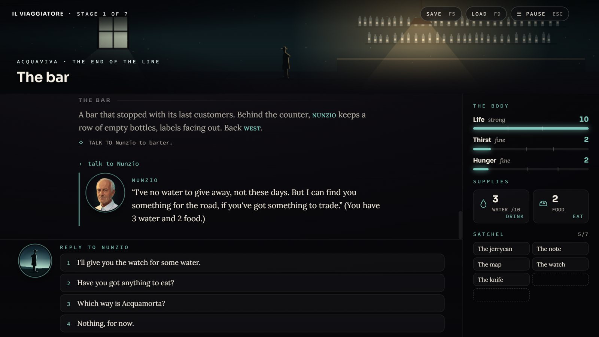
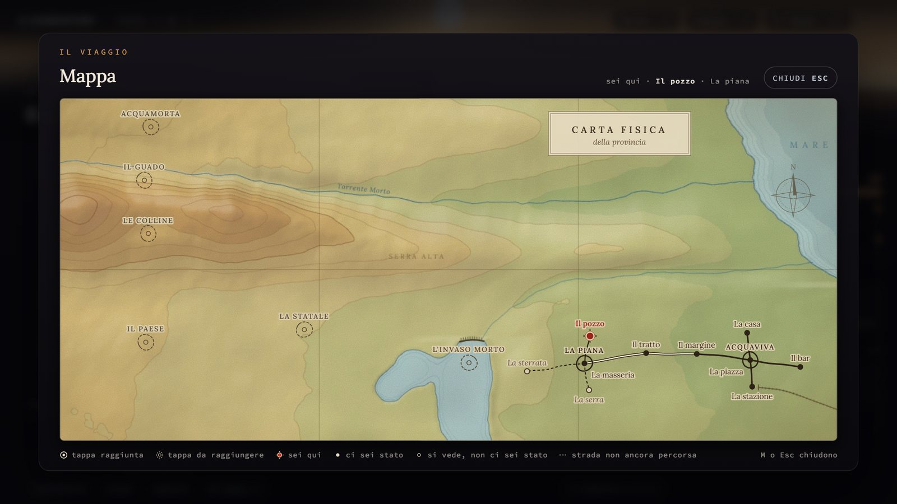
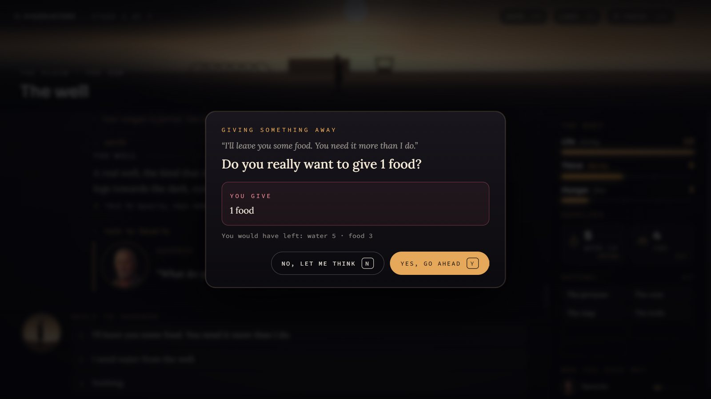

Un uomo torna a casa. A piedi. Attraverso una terra che l’acqua ha svuotato. A man returns home. On foot. Across a land the water has emptied.
Un’avventura testuale di sopravvivenza e cammino, scritta in FAVELLA 1 e doppiata per intero, in italiano e in inglese. A text adventure about survival and a long walk, written in FAVELLA 1 and fully voiced in Italian and English.
Versione {{VERSIONE}} · {{DATA_IT}} · Windows, Linux e browser Version {{VERSIONE}} · {{DATA_EN}} · Windows, Linux and browser
La storiaThe story
Le lettere di tua moglie hanno smesso di arrivare. L’ultimo biglietto, in stampatello e senza firma, dice soltanto: «Non è il caso di tornare.» Torni lo stesso. Your wife’s letters have stopped coming. The last note, in block capitals and unsigned, says only: “There’s no need to come back.” You go back anyway.
Sette tappe fino a casa, da Acquaviva ad Acquamorta, lungo un sud rimasto senz’acqua. La sete detta il passo, l’acqua è la moneta e ogni scelta pesa: chi aiuti, che cosa dai via, quando alzi le mani. E al guado, ad aspettarti, tuo fratello. Seven stages home, from Acquaviva to Acquamorta, through a southern land that has run dry. Thirst sets the pace, water is the currency and every choice carries weight: whom you help, what you give away, when you raise a hand to someone. And at the ford, waiting for you, your brother.
Il giocoThe game













In numeriBy the numbers
- 7tappestages
- 39luoghiplaces
- 14personaggicharacters
- 6finaliendings
-
Si scrive, o si toccaType, or click
In italiano si gioca scrivendo, come nelle avventure classiche (bevi, parla con Rosaria, usa la lettera su Cosimo), oppure a clic, con le uscite, le cose e le risposte a portata di mano.
In Italian you can type, as in classic text adventures, or click. In English you play by clicking, with exits, objects and replies right at hand.
-
Doppiato per interoFully voiced
Circa un’ora di parlato: il narratore, i quattordici personaggi, i suggerimenti e il trailer, in italiano e in inglese. Oppure il diario lo legge il tuo lettore di schermo.
About an hour of speech: the narrator, all fourteen characters, the hints and the trailer, in Italian and English. Or let your screen reader read the journal.
-
Sette zone, sette braniSeven zones, seven tracks
Ogni zona ha la sua musica, che negli interni si sente da dentro. La colonna sonora si scarica dal menu Extra.
Each zone has its own music, muffled when you step indoors. The soundtrack can be downloaded from the Extra menu.
-
Trenta trofeiThirty trophies
I sei finali, le tre fini lungo la strada, i gesti, i modi di arrivare e tre sfide da tentare in un viaggio solo.
The six endings, the three ways the road can end you, the deeds, the ways of arriving, and three challenges to attempt in a single journey.
-
Si salva come in un giocoSave as in any game
Salvataggi con nome quanti se ne vuole, il rapido con F5 e F9, tre automatici, e ANNULLA per tornare indietro di un turno.
As many named saves as you like, quick save and load on F5 and F9, three autosaves, and UNDO to take back a turn.
-
AccessibileAccessible
Un interruttore per l’alta accessibilità: contrasto alto, testo grande, un carattere ad alta leggibilità, movimento ridotto e il fuoco della tastiera ben visibile.
A single switch, High accessibility: high contrast, large text, a typeface designed for legibility, reduced motion and a clearly visible keyboard focus.
ScaricaDownload
La versione {{VERSIONE}}, la più completa: in più ha la finestra e lo schermo intero dalle opzioni, i salvataggi come file nella cartella Documenti e, con l’installer di Windows e l’AppImage, l’aggiornamento automatico. Version {{VERSIONE}}, the most complete: it adds window and full-screen settings, saves as files in your Documents folder and, with the Windows installer and the AppImage, automatic updates.
Gli eseguibili non sono firmati: Windows SmartScreen può chiedere una conferma («Ulteriori informazioni» → «Esegui comunque»). L’AppImage va resa eseguibile (Proprietà → Permessi, o chmod +x).
The executables are not signed: Windows SmartScreen may ask you to confirm (“More info” → “Run anyway”). The AppImage must be made executable (Properties → Permissions, or chmod +x).
Tutte le versioniAll versions
Gioca nel browserPlay in your browser
Lo stesso gioco, senza installare niente: il motore FAVELLA 1 gira nella pagina. La prima volta scarica l’interprete e la voce (qualche decina di MB), poi il browser li tiene. I salvataggi restano nel browser, e dal taccuino si esportano in un file. The same game, with nothing to install: the FAVELLA 1 engine runs in the page. The first time it downloads the interpreter and the voices (a few dozen MB), then your browser keeps them. Saves stay in the browser, and you can export them to a file from the notebook.
Comincia il viaggioStart the journey
Va meglio su un computer, con un browser recente e lo schermo largo. Best on a computer, with a recent browser and a wide screen.
Il progettoThe project
{{AVVISO_IT}}
{{AVVISO_EN}}
Il progetto è concluso, e il sorgente è aperto: si può studiare, e chi ama FAVELLA 1 è libero di estenderlo o di farne una propria versione. The project is finished, and the source is open: you can study it, and anyone who likes FAVELLA 1 is free to extend it or make their own version. Il codice su GitHubThe code on GitHub